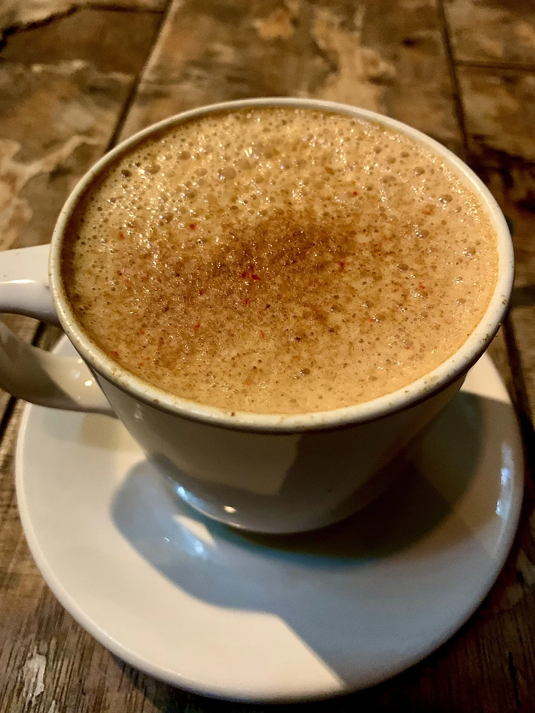
Capuchino
$55
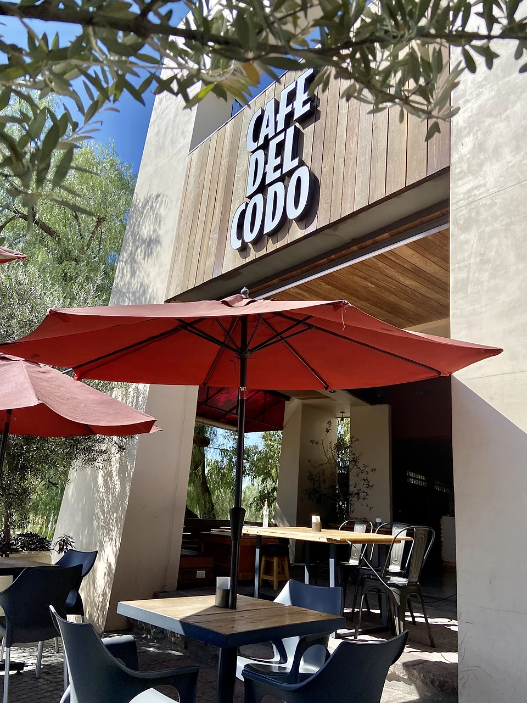
Crepas, waffles, chilaquiles y café en el Centro de Aguascalientes. Todos los días hasta las 12.
Escoge qué se te antoja y mándalo por WhatsApp.

$55
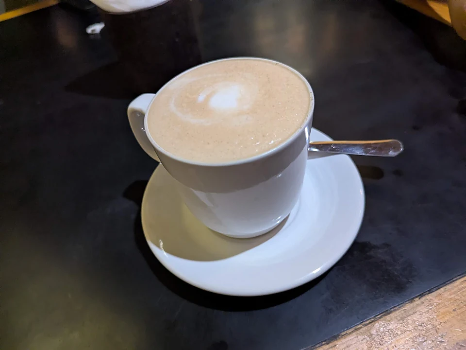
$55
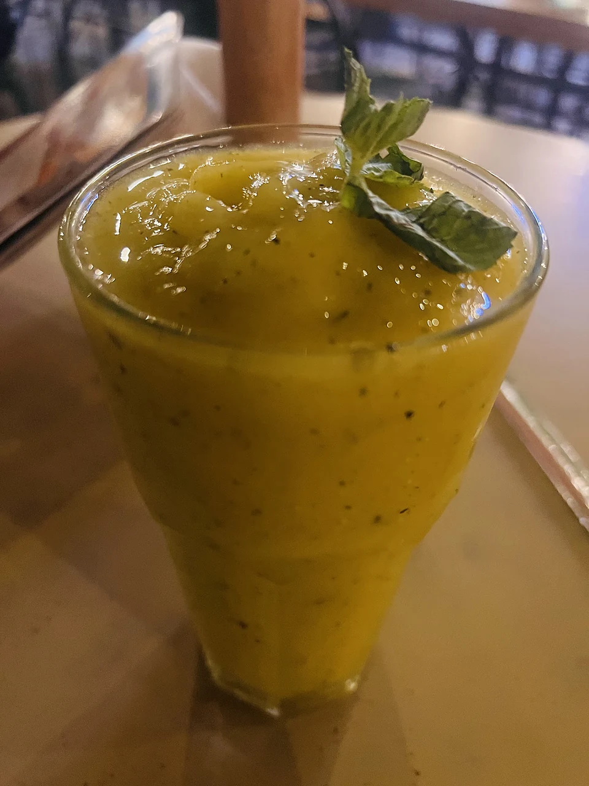
Pregunta el precio
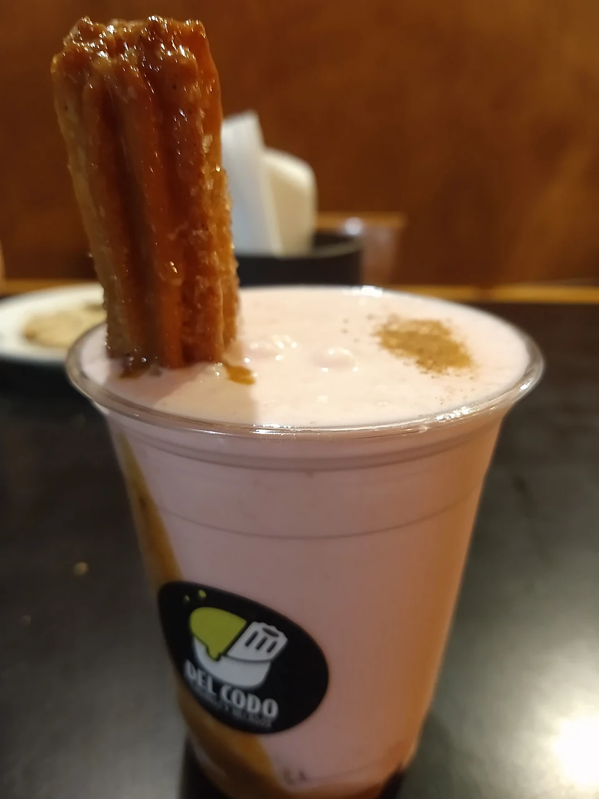
Pregunta el precio
De la pizarra de lo caliente y lo frío
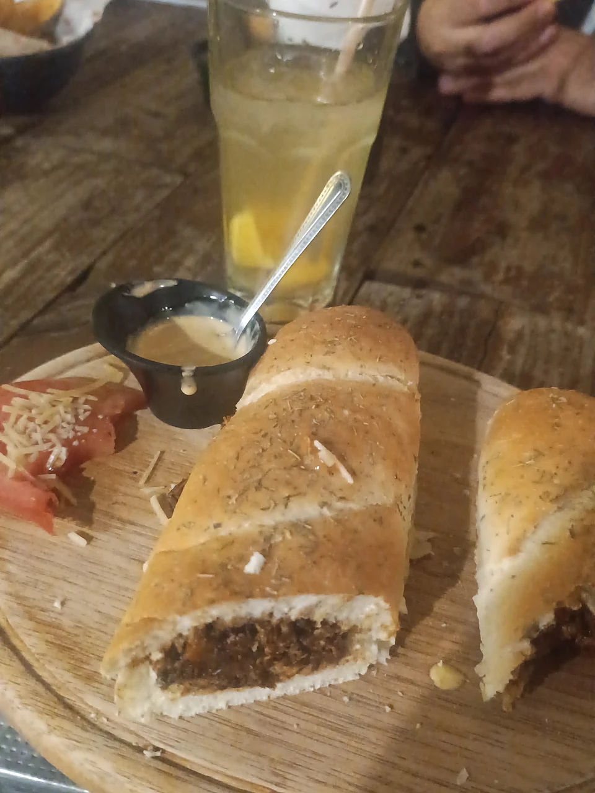
Pregunta el precio
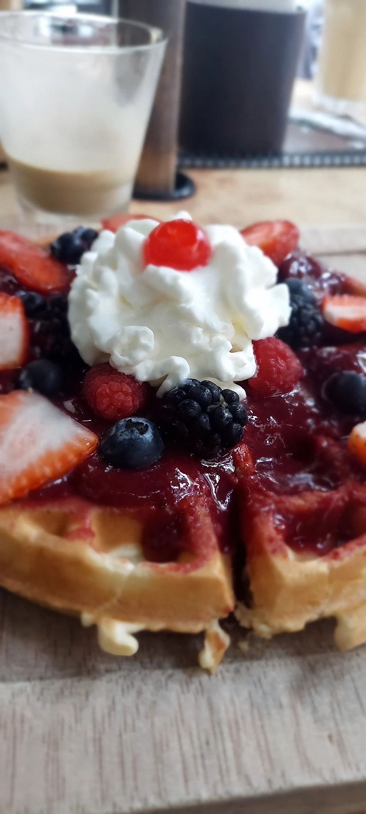
Pregunta el precio
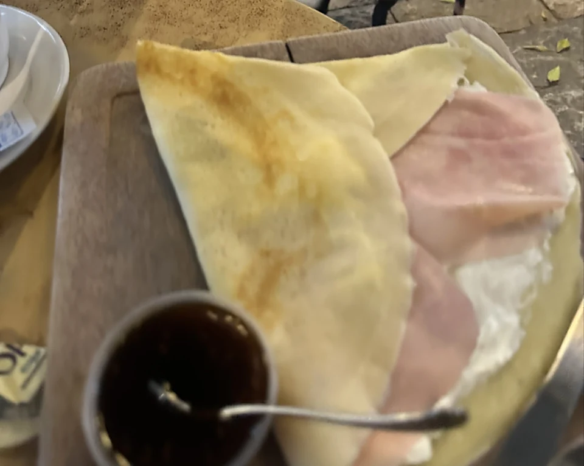
Pregunta el precio
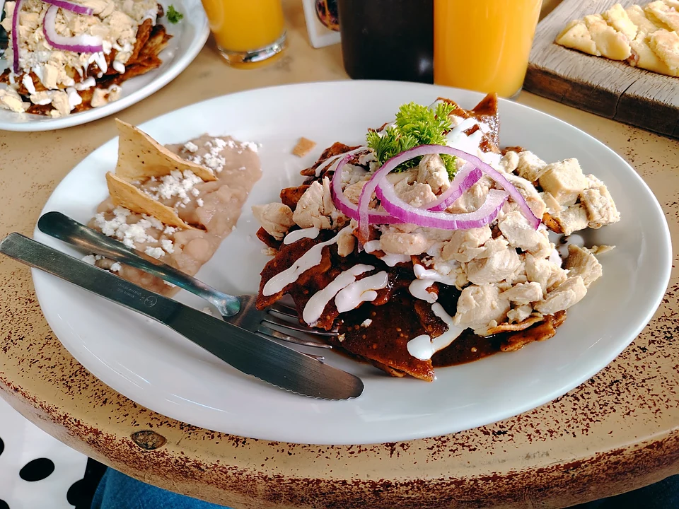
Pregunta el precio
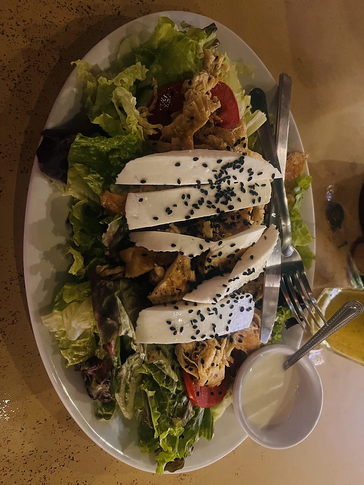
Pregunta el precio
Tu charolaToca Agregar: una bebida y un antojo.
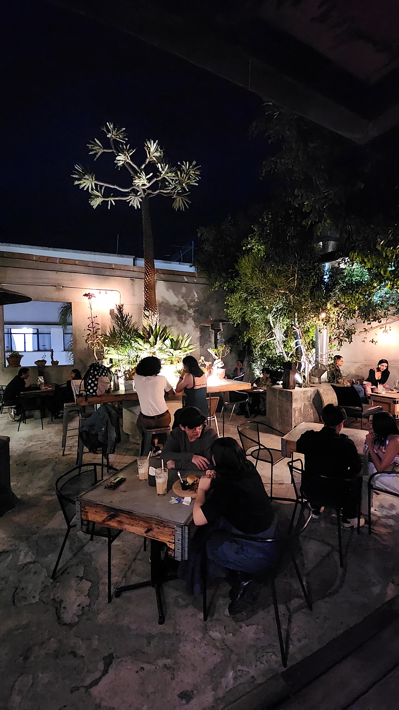
756 opiniones en Google Maps
3.9 con 74 opiniones en TripAdvisor
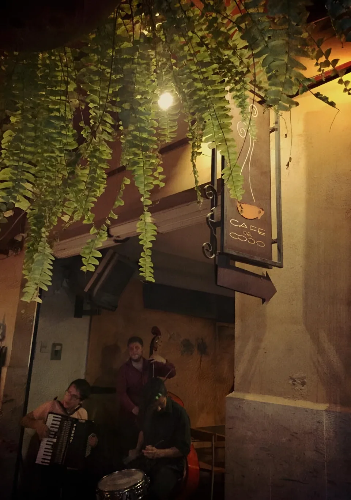
Comandas de quienes ya vinieronSúper rico, buen servicio, precios accesibles, lugar bonito y con buen ambiente para platicar.
Tomamos mesa al aire libre, bajo árboles (romántico)... una carta basta en café, música de fondo bien elegida.
El lugar es muy bonito, está en la Calle del Codo, la decoración te invita a relajarte. Bebida y comida muy rica, precios accesibles.
El café para mi gusto es excelente... Acompañé el café con una crepa de frutos rojos la cual me encantó.
Una zona peatonal del centro muy agradable, llena de árboles, bien iluminada, incluso en algún momento con música en vivo.
Caminando por los callejones del centro histórico llegamos al Café del Codo, un bonito, tranquilo y delicioso restaurante.
La comida excelente, y el café es el mejor que he probado en mucho tiempo, ¡súper recomendado!
Buen lugar, en la mejor esquina del rumbo, es ideal para una taza de café o para tomar unas cervezas.
Su vista es hermosa a una pequeña sección arbolada que es como un callejón de bares y restaurantes.
Callejón peatonal, árbol, sombrillas rojas y mesa para rato.
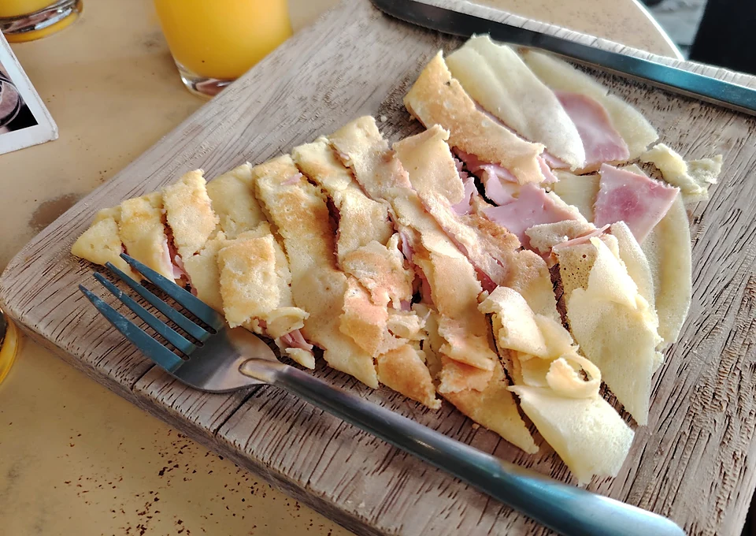
Calle del Codo, a unas cuadras de Catedral
Todos los días, de 9:30 a.m. a 12 a.m.
$35el americano de la pizarra
Todos los días, de 9:30 de la mañana a 12 de la noche.
Sí. En el callejón, bajo el árbol y las sombrillas rojas. De noche se prenden las luces.
Chilaquiles, crepas, waffles dulces y salados, baguettes y ensalada. Y café de la pizarra.
El americano está en $35, el capuchino y el latte en $55, el chai en $65.
Sí, por Rappi y Uber Eats. O pide por WhatsApp y te decimos cómo.
Sí, Café del Codo Norte. Escríbenos y te pasamos cómo llegar.
Pásanoslo por el mismo chat donde te llegó esta muestra.